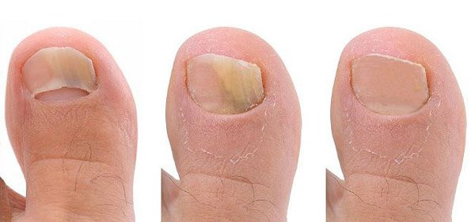
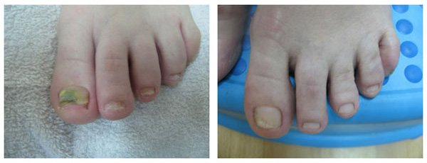
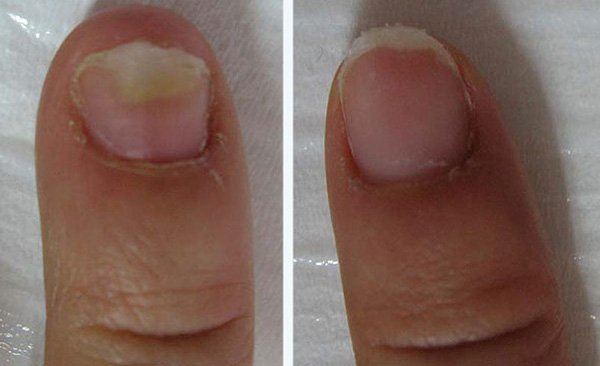
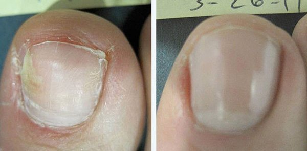

SALUD
Hongos en los pies y las uñas ¿Qué tipo de peligro se esconde tras esta enfermedad y cómo podemos deshacemos de ella?
Editores: De acuerdo con las estadísticas, casi uno de cada cinco seres humanos de la Tierra tienen hongos en los pies y en las uñas. Las causas de su aparición son muy variadas: desde un sistema inmune debilitado hasta zapatos que no son adecuados para sus pies.
Hoy el candidato de ciencias médicas (España), el doctor de la más alta categoría, el Dr. Alejandro Martínez les contará cómo los logros modernos en el ámbito de la medicina permite deshacerse de una enfermedad tan peligrosa y desagradable como son los hongos en pies y uñas en un mes desde casa.
Alejandro Martínez: Empezaremos la tertulia de hoy con el hecho de que hay mucha gente que considera que los hongos de los pies y las uñas solo son un defecto estético y piensan que nunca podrían suponer riesgos para la salud. Pero, ¿es así? ¡Vamos a descubrirlo!
Alejandro Martínez en el programa: "La mañana" nos cuenta cómo mejora los hongos de los pies y las uñas.
Los hongos de los pies y las uñas o, en términos médicos, la onicomicosis, constituye una amenaza bastante seria en estadios avanzados de una enfermedad. La onicomicosis persistente puede provocar una reacción alérgica, debilitar el sistema inmune y causar la intensificación de enfermedades crónicas. Esto quiere decir que si tienes una enfermedad crónica, si los hongos se desarrollan, podrían incrementar las posibilidades de que se intensificase.
¡Lo que significa que un simple problema en los pies y las uñas puede ser peligroso para la vida humana! En este contexto, es necesario tener en cuenta lo siguiente:
En primer lugar, los hongos no son un "simple problema en los pies y las uñas" sino una infestación parasitaria completa del cuerpo. Todo el problema de tus pies y uñas lo causan unos parásitos a los que les gusta tu cuerpo y lo usan como su refugio. En segundo lugar, los hongos en sí mismos no suponen una amenaza letal, pero actúan como agente catalítico para todas las enfermedades que ya tienes.
En términos generales, si tiene problemas crónicos, por ejemplo con el estómago o el hígado.
Alejandro Martínez: Vamos a enumerar los síntomas de la onicomicosis
¿Cuáles son los primeros síntomas de la onicomicosis?
Vamos a enumerar los síntomas de la onicomicosis:
- - grietas en la zona interdigital (normalmente, entre el primer dedo y el segundo o entre el cuarto y quinto dedo)
- -bultos en la piel
- -picor
- -enrojecimiento
- -sensación de ardor
- -dedos más gruesos, uñas dañadas y quebradizas
Todo empieza en la zona de los pies, más a menudo en los pliegues de entre los dedos. Por norma general, el primer síntoma de los hongos es piel laminada, acompañada de ardor y picor
Según las estadísticas, un 20 % de los españoles tienen hongos . Algunos pacientes los tienen en un primer estadio, así que son fáciles de eliminar, pero en algunos la enfermedad ha avanzado mucho y ahora el prevención llevará un tiempo. El problema también es que no todo el mundo busca ayuda médica. Por alguna razón, muchos piensan que los hongos desaparecerán por sí solos como por arte de magia y todo volverá a la normalidad. De hecho, estos parásitos no desaparecerán a no ser que usted haga algo. Los hongos se extenderán por todo el cuerpo, ocupando toda la pierna y las uñas.
prevención de los hongos de los pies y las uñas
Ahora finalmente llegamos a la parte principal, cómo mejora este infortunio. Respecto al prevención tradicional, que a menudo se ofrece en nuestras clínicas, las uñas infectadas se quitan quirúrgicamente, después de esto el paciente tiene un periodo de recuperación de 1-2 meses. Desde mi punto de vista, este es un método bastante bárbaro para el siglo XXI. ¡Pero nuestros doctores en las clínicas ofrecen esta misma opción en el 99 % de los casos! ¡Que levanten la mano todas aquellas personas que no querrían tener que recurrir a la cirugía para solucionar este problema!
Alejandro Martínez ¡Bien! ¡Veo muchas manos levantadas!
Hoy en día, hay modos mucho más prácticos de prevención los hongos de los pies y las uñas y nosotros haciendo todo lo posible para que se introduzcan en el sistema sanitario de nuestro país.
Los centros especializados en el comercio de productos ofrecen a sus pacientes diferentes métodos para eliminar los hongos de los pies y las uñas. El principal inconveniente en este caso es el precio. El coste de los procedimientos que eliminan hongos ronda generalmente los 900 €. Está claro que no todo el mundo puede permitírselo.
Claro, yo no vine al estudio para acabar este programa con un comentario tan pesimista. Alicia Esteban, que sufrió un caso de onicomicosis descuidada hace tan solo un mes, me ayudará a poner un poco de optimismo en todo esto. Ella se curó con un crema especial para parásitos y hongos.
La invitada del programa
Alicia Esteban
Empezamos una prueba del crema de forma independiente. Basándonos en los resultados, podemos decir que el crema realmente ayudó a todos los pacientes. En el 97 % de los casos, ayuda a eliminar los hongos de los pies y las uñas del paciente por completo. Después de la eliminación de los hongos, el crema se puede usar como medida de prevención para una futuras infestación que, teniendo en cuenta el ambiente, puede darse en cualquier momento. En lo que respecta al precio, el crema es 30-40 veces más barato que los métodos de los centros médicos. Y su efectividad es incluso un poco más alta.
Aquí están las fotos de Alicia (ella fue una de las participantes en el grupo de prueba). Estos son sus resultados tras usar el crema durante 30 días:
 El resultado del uso del crema durante 30 días
Estamos 100 % seguros de la efectividad de esta crema
En primer lugar, se prevención de un producto con patente oficial que ha superado todas las pruebas pertinentes. En segundo lugar, probamos el producto en los mismos pacientes, ya que no nos fiábamos de los datos de las estadísticas oficiales. Como ya he dicho antes, muestra unos resultados excepcionales. El crema contiene los siguientes ingredientes: clotrimazol, que tiene efectos antibacterianos y relajantes, elimina el picor y produce un efecto destructivo de las colonias micóticas; extracto de mel, que desinfecta; limón, que ayuda a aliviar el dolor; y vitaminas, que tienen efectos relajantes, reconfortantes y antiinflamatorios. El crema elimina los hongos (incluso aquellos que solo pueden eliminarse quirúrgicamente) y soluciona muchos problemas, incluyendo el picor, la laminación, sensaciones desagradables y mal olor.
Es un remedio verdaderamente único que se está popularizando más y más por todo el mundo. El Ministerio de Salud dispuso que el crema puede venderse en nuestro país solo a precio de producción, es decir, hablando en términos comerciales, a precio de coste. A los ciudadanos de España se les debe ofrecer al mínimo precio posible. Ahora es posible comprar la crema por Internet. Cualquiera puede fácilmente hacer un pedido y comprar este remedio de uso personal. La entrega es por correo o por mensajería (a pagar tras la entrega y la comprobación), su aplicación no requiere habilidades especiales.
Producto natural para los hongos de los pies y las uñas
De moment, el producto solo está disponible en el sitio oficial del proyecto. Negociamos con la red de farmacias, pero todas ellas quieren hacer dinero con . y nuestra posición, igual que la opinión del Ministerio de Salud es contraria a ello: debería venderse a un precio mínimo para abastecer a todos los que la necesitan (que es extremadamente tópico debido a las infecciones por hongos masivas).
¿Existen restricciones en el uso del crema?
El crema no es una suplemento química, por lo que no existen contraindicaciones. Durante nuestras pruebas, utilizamos el crema en 17254 pacientes del Centro y ninguno sufrió alergia a sus componentes. EL crema no causa daños a la salud, a la vez elimina del cuerpo varios tipos de hongos, incluido los más peligrosos que existen actualmente. También me gustaría comentar que los niños también pueden usar este crema.
Me gustaría acabar con el viejo dicho "Si las barbas del vecino ves pelar, pon ls tuyas a remojar". Los hongos de los pies no son solo un defecto estético, es una enfermedad bastante seria que puede llevar a consecuencias graves. Será mejor que pongan remedio ahora, que todavía no es demasiado tarde.
P.D.: Les hicimos una petición a los fabricantes del crema. ¡Ahora los lectores tienen la oportunidad de pedir a mitad de precio!
¡Que goces de buena salud y hasta la próxima!
Alejandro Martínez, en el programa "La mañana"
Yo pedí este crema para mí. El estado de mis uñas era terrible... Pensaba que me las tendrían que quitar... Pero después de usar el crema durante 30-40 días, ¡mis uñas volvieron a la normalidad! ¡No podéis imaginaros lo feliz que me puse!
Cuando empecé a usar el crema, no esperaba este efecto tan extraordinario. ¡Estoy muy feliz de haber solucionado todos los problemas con mis pies y uñas y haber vencido a los hongos!
Pedí el crema y un mensajero me la entregó en mi domicilio dos días después. He completado todo el prevención. Me aterroriza pensar cómo vivía con aquello.
ce dos semanas que me estoy echando el crema , hoy es el décimo sexto día ¡y el resultado es fantástico! Intenté montones de cosas antes, casi me intoxiqué con medicaciones contra los hongos, pero mis uñas seguían consumidas por ellos. ¡No puedo expresar la alegría que sentí cuando conseguí mejorame! Hice una foto de mis uñas antes. Aquí tenéis una foto del antes y el después del crema. Echadles un vistazo:

Yo también lo pedí. Me prometieron que me lo entregarían en el transcurso de una semana, estoy esperando el paquete.
Yo tenía infección por hongos en estado avanzado. Es verdad que dejé que la enfermedad avanzara porque pensaba que no era nada grave. Me di cuenta de que realmente era grave cuando mi varicosidad empeoró. Los médicos de mi clínica habitual me recomendaron que eliminara los hongos. En una clínica privada me dijeron que podía eliminarlos con láser. Eran unas 7-8 sesiones y el precio de cada sesión era 220 €. ¡Mi sueldo es solo de 175 €! Y, evidentemente, no quería quitarme varias uñas de golpe. No podría salir a la calle después de eso. Probé casi todos los remedios tradicionales, pero nada me ayudó. Tuve suerte porque en algún lugar que ahora no recuerdo encontré información sobre el crema o y la pedí. Sinceramente, no esperaba resultados tan buenos. ¡Pero los hongos desaparecieron al cabo de un mes y medio! ¡Completamente! No pensaba que me fuera posible librarme de ellos. ¡Así que os quiero expresar mi más profundo agradecimiento! Siento haber soltado esta parrafada, ¡pero es que estoy muy emocionada en este momento!
¡Los que tengáis hongos en los pies realmente tenéis suerte! Yo los tenía en los brazos, ¡¿os imagináis lo repugnante que era?! La gente se sentía tan amenazada por mis brazos cuando los veían, era muy frustrante... Me sentía muy avergonzada. Pero no podía mejoralo, nada me ayudaba. Ahora estoy usando este crema (hace solo 2 semanas), ¡y mirad el resultado! 
Yo la pido con regularidad. Toda mi familia la usa. Ayudó mucho a mi hijo cuando tuvo problemas.
La entrevista ha sido muy interesante, ¡gracias! ¡Ayuda a abrirle los ojos a la gente!
La entrevista ha sido muy interesante, ¡gracias! ¡Ayuda a abrir los ojos a la gente!
¿No es un timo? ¿Por qué la venden por Internet?
Virginia, ¿de verdad has leído el artículo? ¡Se vende por Internet porque los gorrones del negocio farmacéutico quieren hacer más dinero con ella! ¿Cómo va a ser un timo de todas maneras, teniendo en cuenta que pagas a la entrega? Yo la pedí, me la entregó un mensajero, lo comprobé todo y después pagué. Si la entrega es por correo, funciona igual- pagas cuando se te entrega. Además, hoy en día todo se vende por Internet, desde la ropa a herramientas y muebles.
Lo siento, no había visto la información sobre la entrega contra reembolso en la página. Entonces no hay ningún problema, La Entrega contra reembolso es completamente segura. También haré un pedido.
También compartiré mi alegría. Mis uñas estaban constantemente dañadas y dolían, intenté prevenciónlas con una laca para uñas especial, también tomé unas pastillas. La laca fue efectiva solo por un tiempo. Ahora uso el crema , podéis ver el resultado en la foto. Hace tres semanas que me froto las uñas con ella, pero he decidido completar el prevención (1 mes) 
Gracias por el consejo. Por fin conseguí deshacerme de los hongos. ¡Cuánta mierda nos encontramos en la vida!
He leído las recomendaciones y me he dado cuenta de que tengo que comprarlo :( Estoy mal, voy a hacer un pedido.